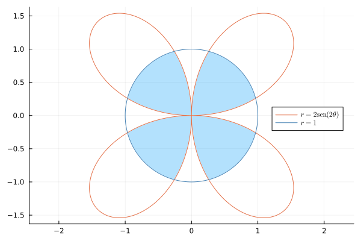
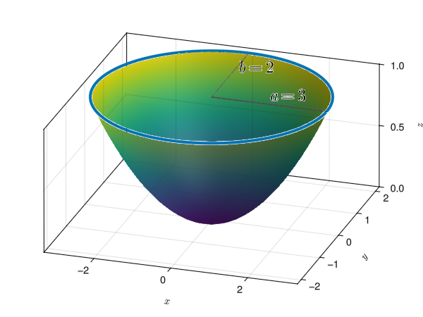
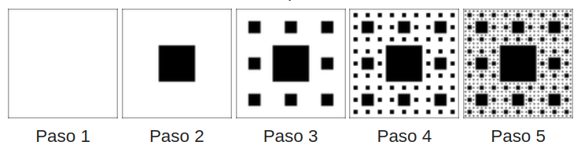

16 2025-05-28
Examen de Análisis II
Ejercicio 16.1 Una magnitud \(s\) depende del tiempo \(t\) según la ecuación diferencial \(ds = 2t\,dt\). Sabiendo que \(s(0) = 1\), calcular las integrales superiores e inferiores de Riemann de ambos lados de la ecuación y utilizarlas para calcular \(s(t)\).
Calcularemos primero las sumas inferior y superior de Riemann del lado derecho de la ecuación diferencial. Para ello, consideraremos la función \(f(t) = 2t\) en el intervalo \([0,t]\). Si dividimos el intervalo \([0,t]\) en \(n\) subintervalos de igual longitud \(\Delta t = \frac{t}{n}\), obtenemos la partición \(P_n = \{t_i = i\frac{t}{n}: i = 0, \ldots, n\}\). Como \(f(t)\) es una función creciente, la suma inferior de Riemann vale
\[\begin{align*} \sum_{i=1}^{n} f(t_{i-1}) \Delta t &= \sum_{i=1}^{n} 2t_{i-1} \frac{t}{n} = \sum_{i=1}^{n} 2(i-1)\frac{t^2}{n^2} = \frac{2t^2}{n^2} \sum_{i=1}^{n} (i-1) \\ &= \frac{2t^2}{n^2} \cdot \frac{(n-1)n}{2} = \frac{(n-1)t^2}{n}. \end{align*}\]
Y la suma superior de Riemann se calcula de manera similar, pero utilizando el valor de la función en el extremo derecho de cada subintervalo:
\[\begin{align*} \sum_{i=1}^{n} f(t_i) \Delta t &= \sum_{i=1}^{n} 2t_i \frac{t}{n} = \sum_{i=1}^{n} 2i\frac{t^2}{n^2} = \frac{2t^2}{n^2} \sum_{i=1}^{n} i \\ &= \frac{2t^2}{n^2} \cdot \frac{n(n+1)}{2} = \frac{(n+1)t^2}{n}. \end{align*}\]
Así pues, la integral inferior de Riemann es
\[ \underline{\int_0^t} 2x\,dx = \lim_{n \to \infty} \frac{(n-1)t^2}{n} = t^2, \]
y la integral superior de Riemann es
\[ \overline{\int_0^t} 2x\,dx = \lim_{n \to \infty} \frac{(n+1)t^2}{n} = t^2. \]
Por tanto, ambas integrales coinciden y podemos concluir que
\[ \int_0^t 2x\,dx = t^2. \]
Ahora calcularemos las sumas inferior y superior del lado izquierdo de la ecuación diferencial. Para ello, consideraremos la función \(g(s) = 1\) en el intervalo \([1,s(t)]\). Si dividimos el intervalo \([1,s(t)]\) en \(n\) subintervalos de igual longitud \(\Delta s = \frac{s(t)-1}{n}\), obtenemos la partición \(Q_n = \{s_i = 1 + i\frac{s(t)-1}{n}: i = 0, \ldots, n\}\). Como \(g(s)\) es una función constante, la suma inferior de Riemann vale
\[ \sum_{i=1}^{n} g(s_{i-1}) \Delta s = \sum_{i=1}^{n} \frac{s(t)-1}{n} = \frac{n(s(t)-1)}{n} = s(t) - 1. \]
Y la suma superior de Riemann se calcula de manera similar
\[ \sum_{i=1}^{n} g(s_i) \Delta s = \sum_{i=1}^{n} \frac{s(t)-1}{n} = \frac{n(s(t)-1)}{n} = s(t) - 1. \]
Como el valor de ambas sumas es el mismo y no depende de \(n\), podemos concluir que
\[ \int_1^{s(t)} \,dx = s(t) - 1. \]
Finalmente, igualando las dos integrales, obtenemos
\[ s(t) - 1 = t^2 \implies s(t) = t^2 + 1. \]
Ejercicio 16.2 Calcular el área de la intersección del círculo de radio 1 centrado en el origen y la rosa de 4 pétalos de ecuación \(r = 2\operatorname{sen}(2\theta)\).

Por simetría, basta calcular el volumen de la parte del depósito en el primer cuadrante y multiplicar por 4.
Calculamos primero los puntos de intersección del pétalo del primer cuadrante con el círculo. Para ello, igualamos las ecuaciones de ambos conjuntos:
\[ 2\operatorname{sen}(2\theta) = 1 \Leftrightarrow \operatorname{sen}(2\theta) = \frac{1}{2} \Leftrightarrow 2\theta = \frac{\pi}{6} \mbox{ y } \frac{5\pi}{6} \Leftrightarrow \theta = \frac{\pi}{12} \mbox{ y }\frac{5\pi}{12}. \]
Así pues, trabajando en coordenadas polares, y descomponiendo intervalo de integración del ángulo \(\theta\) \([0, \pi/2]\) en tres subintervalos \([0,\pi/12]\), \([\pi/12, 5\pi/12]\) y \([5\pi/12, \pi/2]\), el área de la intersección del círculo y el pétalo del primer cuadrante viene dada por la suma de las siguientes integrales
\[ \int_0^{\frac{\pi}{12}} \frac{2\operatorname{sen}(2\theta)^2}{2}\,d\theta + \int_{\frac{\pi}{12}}^{\frac{5\pi}{12}} \frac{1^2}{2}\,d\theta + \int_{\frac{5\pi}{12}}^{\frac{\pi}{2}} \frac{2\operatorname{sen}(2\theta)^2}{2}\,d\theta. \]
Calculamos cada una de estas integrales por separado:
\[\begin{align*} \int_0^{\frac{\pi}{12}} \frac{(2\operatorname{sen}(2\theta))^2}{2}\,d\theta &= 2\int_0^{\frac{\pi}{12}} \operatorname{sen}(2\theta)^2\,d\theta = 2\int_0^{\frac{\pi}{12}} \frac{1 - \cos(4\theta)}{2}\,d\theta \\ &= \left[\theta - \frac{\operatorname{sen}(4\theta)}{4} \right]_0^{\frac{\pi}{12}} = \frac{\pi}{12} - \frac{\operatorname{sen}(\frac{4\pi}{12})}{4} = \frac{\pi}{12} - \frac{\sqrt{3}}{8}.\\ \int_{\frac{\pi}{12}}^{\frac{5\pi}{12}} \frac{1^2}{2}\,d\theta &= \left[ \frac{\theta}{2} \right]_{\frac{\pi}{12}}^{\frac{5\pi}{12}} = \left( \frac{5\pi}{24} - \frac{\pi}{24} \right) = \frac{\pi}{6}.\\ \int_{\frac{5\pi}{12}}^{\frac{\pi}{2}} \frac{(2\operatorname{sen}(2\theta))^2}{2}\,d\theta &= \left[ \frac{\theta}{2} - \frac{\operatorname{sen}(4\theta)}{4} \right]_\frac{5\pi}{12}^{\frac{\pi}{2}} = \left( \frac{\pi}{2} - \frac{\operatorname{sen}(4\frac{\pi}{2})}{4} \right) - \left( \frac{5\pi}{12} - \frac{\operatorname{sen}(4\frac{5\pi}{12})}{4} \right) \\ &= \frac{\pi}{12} - \frac{\sqrt{3}}{8}. \end{align*}\]
Por tanto, el área de la intersección del círculo y el pétalo del primer cuadrante es
\[ \left( \frac{\pi}{12} - \frac{\sqrt{3}}{8} \right) + \frac{\pi}{6} + \left( \frac{\pi}{12} - \frac{\sqrt{3}}{8} \right) = \frac{\pi}{3} - \frac{\sqrt{3}}{4}, \]
y el área total de la intersección del círculo y la rosa de 4 pétalos es
\[ 4\left( \frac{\pi}{3} - \frac{\sqrt{3}}{4} \right) = \frac{4\pi}{3} - \sqrt{3}. \]
Ejercicio 16.3 Calcular el volumen de un depósito limitado por el paraboloide elíptico de ecuación \(z = \dfrac{x^2}{9} + \dfrac{y^2}{4}\) y el plano \(z = 1\) en m\(^3\).

Aunque no se trata de un sólido de revolución, las secciones transversales del depósito con respecto al eje \(z\) son regiones regulares con forma elíptica de ecuación
\[ \frac{x^2}{9} + \frac{y^2}{4} = z \Leftrightarrow \frac{y^2}{4} = z - \frac{x^2}{9} \Leftrightarrow y = \pm 2\sqrt{z - \frac{x^2}{9}}, \]
de manera que acumulando el área de estas elipses a lo largo del eje \(z\) en el intervalo \([0,1]\) podemos obtener el volumen del depósito.
Igualando \(y=0\) en esta ecuación, podemos obtener los puntos donde estas elipses cortan al eje \(x\).
\[ 2\sqrt{z - \frac{x^2}{9}} = 0 \Leftrightarrow z - \frac{x^2}{9} = 0 \Leftrightarrow z = \frac{x^2}{9} \Leftrightarrow x = \pm 3\sqrt{z}. \]
Así pues, el área de cada sección elíptica viene dada por la integral
\[\begin{align*} A(z) &= 2\int_{-3\sqrt{z}}^{3\sqrt{z}} 2\sqrt{z - \frac{x^2}{9}}\,dx = 4\int_{-3\sqrt{z}}^{3\sqrt{z}} \sqrt{z - \frac{x^2}{9}}\,dx \\ &= 12 \int_{-\pi/2}^{\pi/2} \sqrt{z - z\operatorname{sen}(u)^2} 3\sqrt{z}\cos(u)\,du \tag{Cambio $x=3\sqrt{z}\operatorname{sen}(u)$}\\ &= 12\sqrt{z} \int_{-\pi/2}^{\pi/2} \sqrt{z}\sqrt{1 - \operatorname{sen}(u)^2}\cos(u)\,du \\ &= 12z \int_{-\pi/2}^{\pi/2} \cos(u)^2\,du = 12z \int_{-\pi/2}^{\pi/2} \frac{1 + \cos(2u)}{2}\,du \\ &= 6z \left[ u + \frac{\operatorname{sen}(2u)}{2} \right]_{-\pi/2}^{\pi/2} \\ &= 6z \left( \frac{\pi}{2} + 0 - (-\frac{\pi}{2} + 0) \right) = 6\pi z. \end{align*}\]
Finalmente, para calcular el volumen del depósito, integramos el área de las secciones elípticas a lo largo del eje \(z\) en el intervalo \([0,1]\).
\[ \int_0^1 A(z)\,dz = \int_0^1 6\pi z\,dz = 6\pi \left[ \frac{z^2}{2} \right]_0^1 = 6\pi \cdot \frac{1}{2} = 3\pi \mbox{m}^3. \]
Ejercicio 16.4 Estudiar la convergencia de las siguientes series y calcular una cota del error cometido al aproximarlas mediante una suma parcial de orden 10.
- \(\displaystyle \sum_{n=1}^\infty \frac{\ln(n)}{n^2}\).
- \(\displaystyle \sum_{n=1}^\infty \sqrt{\frac{(n+1)}{n^2+n-1}}\).
La serie \(\displaystyle \sum_{n=1}^\infty \frac{\ln(n)}{n^2}\) es de términos positivos, por lo que, utilizando el criterio de la integral, tenemos
\[\begin{align*} \int_1^\infty \frac{\ln(x)}{x^2}\,dx &= \int_1^\infty \ln(x) \cdot x^{-2}\,dx \\ &= \left[-\frac{\ln(x)}{x}\right]_1^\infty + \int_1^\infty x^{-2},dx \tag{Integración por partes}\\ &= \lim_{x\to\infty}-\frac{\ln(x)}{x} + \frac{\ln(1)}{1}+ \left[ -\frac{1}{x} \right]_1^\infty \\ &= 0 + \lim_{x\to\infty} -\frac{1}{x} + \frac{1}{1} = 1. \end{align*}\]
Y como la integral existe y es finita, la serie converge.
Al aproximar su suma mediante la suma parcial de orden 10, podemos acotar el error cometido mediante la integral
\[\begin{align*} \left|\sum_{n=11}^\infty \frac{\ln(n)}{n^2} \right| &\leq \int_{10}^\infty \frac{\ln(x)}{x^2}\,dx = \left[-\frac{\ln(x)+1}{x}\right]_{10}^\infty\\ &= \lim_{x\to\infty} -\frac{\ln(x)+1}{x} + \frac{\ln(10)+1}{10} \\ &\approx 0.3303. \end{align*}\]
La serie \(\displaystyle \sum_{n=1}^\infty \sqrt{\frac{(n+1)}{n^2+n-1}}\) también es de términos positivos, y se cumple que
\[ \sqrt{\frac{n+1}{n^2+n-1}} \geq \sqrt{\frac{n+1}{n^2+n}} = \sqrt{\frac{n+1}{n(n+1)}} =\frac{1}{\sqrt{n}} \ \forall n \geq 1. \]
Como la serie \(\displaystyle \sum_{n=1}^\infty \frac{1}{\sqrt{n}}\) diverge al ser una serie \(p\) con \(p<1\), por el criterio de comparación podemos concluir que la serie \(\displaystyle \sum_{n=1}^\infty \sqrt{\frac{(n+1)}{n^2+n-1}}\) también diverge.
Ejercicio 16.5 La alfombra de Sierpiński es un conjunto fractal que es una generalización en dos dimensiones del conjunto de Cantor. Se puede construir de la siguiente manera:
- Comenzamos con un cuadrado de lado 1.
- Dividimos el cuadrado en 9 cuadrados más pequeños de lado 1/3 del lado original.
- Eliminamos el cuadrado central.
- Repetimos el proceso en cada uno de los cuadrados restantes.

Calcular el área de la alfombra de Sierpiński.
Para calcular el área de la alfombra de Sierpiński, observamos que en cada iteración del proceso, el área del cuadrado original se reduce \(1/9\) de su tamaño anterior, ya que eliminamos el cuadrado central. Así pues, en cada iteración se tiene
\[ \begin{array}{cccc} \hline \mbox{Iteración} & \mbox{Área cuadrado} & \mbox{Num cuadrados} & \mbox{Area quitada} \\ 1 & \frac{1}{9} & 1 & \frac{1}{9} \\ 2 & \frac{1}{9^2} & 8 & \frac{8}{9^2} \\ 3 & \frac{1}{9^3} & 8^2 & \frac{8^2}{9^3} \\ \vdots & \vdots & \vdots & \vdots \\ n & \frac{1}{9^n} & 8^{n-1} & \frac{8^{n-1}}{9^n} \\ \hline \end{array} \]
Por tanto, la suma de las areas quitadas viene dada por la serie
\[ \sum_{n=1}^\infty \frac{8^{n-1}}{9^n} = \frac{1}{9}\sum_{n=1}^\infty \left(\frac{8}{9}\right)^{n-1} = \frac{1}{9}\sum_{n=0}^\infty \left(\frac{8}{9}\right)^n, \]
que se trata de una serie geométrica de razón \(r = \frac{8}{9} < 1\), por lo que converge a
\[ \frac{1}{9} \cdot \frac{1}{1 - \frac{8}{9}} = \frac{1}{9} \cdot 9 = 1. \]
Por tanto, el área total quitada es 1, y como el área del cuadrado original era 1, el área de la alfombra de Sierpiński es nula y se trata de un conjunto de medida nula.
Ejercicio 16.6 La función de densidad de probabilidad de una variable aleatoria normal estándar es
\[ f(x) = \frac{1}{\sqrt{2\pi}}e^{-\frac{x^2}{2}}. \]
Dado que esta función no tiene integral elemental, calcular la serie que resulta de integrar su serie de Maclaurin y determinar su dominio de convergencia puntual.
Utilizar los \(5\) primeros términos de esta serie para calcular de manera aproximada la probabilidad de que la variable tome un valor entre \(0\) y \(1\). Dar una cota del error cometido.
Sabemos que la serie de Maclaurin de la función exponencial \(e^x\) es
\[ \sum_{n=0}^\infty \frac{x^n}{n!}, \]
de modo que la serie de Maclaurin de la función \(f(x) = \frac{1}{\sqrt{2\pi}}e^{-\frac{x^2}{2}}\) es
\[ \frac{1}{\sqrt{2\pi}}\sum_{n=0}^\infty \frac{(-x^2/2)^n}{n!} = \frac{1}{\sqrt{2\pi}}\sum_{n=0}^\infty \frac{(-1)^n}{2^n n!} x^{2n}. \]
Esta serie converge para todo \(x \in \mathbb{R}\), ya que la serie de Maclaurin de la función exponencial converge para todo \(x \in \mathbb{R}\), de manera que podemos calcular la integral de \(f\) integrando la serie término a término.
\[\begin{align*} \int f(x)\,dx &= \frac{1}{\sqrt{2\pi}}\int \sum_{n=0}^\infty \frac{(-1)^n}{2^n n!} x^{2n}\,dx \\ &= \frac{1}{\sqrt{2\pi}}\sum_{n=0}^\infty \frac{(-1)^n}{2^n n!} \int x^{2n}\,dx \\ &= \frac{1}{\sqrt{2\pi}}\sum_{n=0}^\infty \frac{(-1)^n}{2^n n!} \cdot \frac{x^{2n+1}}{2n+1} + C \\ &= \frac{1}{\sqrt{2\pi}}\sum_{n=0}^\infty \frac{(-1)^n x^{2n+1}}{2^n n!(2n+1)} + C. \end{align*}\]
Para estudiar su dominio de convergencia puntual calculamos el radio de convergencia mediante el criterio de la razón.
\[\begin{align*} \lim_{n \to \infty} \left| \frac{a_n}{a_{n+1}} \right| &= \lim_{n \to \infty} \left| \frac{\frac{(-1)^n}{2^n n!(2n+1)}}{\frac{(-1)^{n+1}}{2^{n+1} (n+1)!(2(n+1)+1)}} \right| \\ &= \lim_{n \to \infty} \frac{2^{n+1} (n+1)!(2n+3)}{2^n n!(2n+1)}\\ &= \lim_{n \to \infty} \frac{2(n+1)(2n+3)}{(2n+1)} \\ &= \lim_{n \to \infty} \frac{4n^2+10n+6}{2n+1} = \infty. \end{align*}\]
De manera que la serie converge para todo \(x \in \mathbb{R}\).
La probabilidad de que la variable tome un valor entre \(0\) y \(1\) es
\[ P(0 < X < 1) = \int_0^1 f(x)\,dx = \left[\frac{1}{\sqrt{2\pi}}\sum_{n=0}^\infty \frac{(-1)^n x^{2n+1}}{2^n n!(2n+1)}\right]_0^1 = \frac{1}{\sqrt{2\pi}}\sum_{n=0}^\infty \frac{(-1)^n}{2^n n!(2n+1)}. \]
La suma parcial de orden \(5\) de esta serie es
\[ \frac{1}{\sqrt{2\pi}}\sum_{n=0}^4 \frac{(-1)^n}{2^n n!(2n+1)} = \frac{1}{\sqrt{2\pi}} \left( 1 - \frac{1}{6} + \frac{1}{40} - \frac{1}{336} + \frac{1}{3456} \right) \approx 0.3415. \]
Al tratarse de una serie alternada, como la sucesión \(\left(\frac{(-1)^n}{2^n n!(2n+1)}\right)_{n=0}^\infty\) es decreciente y tiende a cero, podemos acotar el error cometido al aproximar la suma de la serie mediante la suma parcial de orden \(5\) utilizando el teorema del resto de la serie alternada, es decir, mediante el siguiente término de la sucesión,
\[ \left|\sum_{n=5}^\infty \frac{(-1)^n}{2^n n!(2n+1)}\right| \leq \left| \frac{(-1)^5}{2^5 5!(2\cdot 5 + 1)} \right| = \frac{1}{32 \cdot 120 \cdot 11} = \frac{1}{42240} \approx 2.4 \cdot 10^{-5}. \]
Ejercicio 16.7 La función de densidad de probabilidad de la distribución normal estándar es
\[ f(x) = \frac{1}{\sqrt{2\pi}} e^{-\frac{x^2}{2}}. \]
Demostrar que esta distribución tiene media cero y desviación típica uno.
Para calcular la media de una variable aleatoria con función de densidad de probabilidad \(f(x)\), tenemos que cualcular la integral
\[\begin{align*} \mu &= \int_{-\infty}^\infty x f(x)\,dx = \int_{-\infty}^\infty x \frac{1}{\sqrt{2\pi}} e^{-\frac{x^2}{2}}\,dx\\ &= \frac{1}{\sqrt{2\pi}} \int_{-\infty}^\infty x e^{-\frac{x^2}{2}}\,dx = \frac{1}{\sqrt{2\pi}} \left[ -e^{-\frac{x^2}{2}} \right]_{-\infty}^\infty \tag{Cambio $u=-x^2/2$}\\ &= \frac{1}{\sqrt{2\pi}} \left( 0 - 0 \right) = 0. \end{align*}\]
Y para calcular la varianza, tenemos que calcular la integral
\[\begin{align*} \sigma^2 &= \int_{-\infty}^\infty (x - \mu)^2 f(x)\,dx = \int_{-\infty}^\infty x^2 f(x)\,dx \tag{Como $\mu = 0$}\\ &= \int_{-\infty}^\infty x^2 \frac{1}{\sqrt{2\pi}} e^{-\frac{x^2}{2}}\,dx = \frac{1}{\sqrt{2\pi}} \int_{-\infty}^\infty x^2 e^{-\frac{x^2}{2}}\,dx \\ &= \frac{1}{\sqrt{2\pi}} \left(\left[ -x e^{-\frac{x^2}{2}} \right]_{-\infty}^\infty + \int_{-\infty}^\infty e^{-\frac{x^2}{2}}\,dx\right) \tag{Integración por partes (1)}\\ &= \frac{1}{\sqrt{2\pi}} \left( \lim_{x\to\infty} \frac{-x}{e^{x^2/2}} - \lim_{x\to-\infty} \frac{-x}{e^{x^2/2}} + \int_{-\infty}^\infty e^{-\frac{x^2}{2}}\,dx \right) \\ &= \frac{1}{\sqrt{2\pi}} \left( 0 + 0 + \int_{-\infty}^\infty e^{-\frac{x^2}{2}}\,dx \right) = \frac{1}{\sqrt{2\pi}} \int_{-\infty}^\infty e^{-\frac{x^2}{2}}\,dx.\\ &(1) u = x, dv = xe^{-\frac{x^2}{2}}dx \end{align*}\]
Esta integral no puede ser calculada directamente, pero sabemos que vale \(1\) al ser la integral de la función de densidad de probabilidad de la distribución normal estándar. Por tanto, podemos concluir que \(\sigma^2 = 1\), y por tanto, la desviación típica es \(\sigma = 1\).